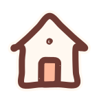
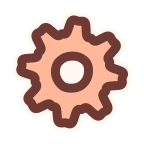
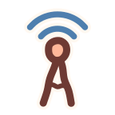

9:41▂▄▆ ▮
小米粒出生第 23 天
自动监听哭声 · 已开启
妈咪日记新说一句话，帮你把今天记下来
今天的记录喂奶 / 睡觉 / 拍嗝：开始后计时

首页规律
家庭

我的基于设计稿 v1.1 · 入口在首页快捷按钮下方 · 首页其余内容与底部标签不变 · 点击可跳转 · 数据均为示例

首页
我的小米粒 · 出生第 23 天
已沿用宝宝资料：小米粒 · 出生第 23 天
妈咪日记仅用于记录宝宝日常情况，不提供医疗诊断或建议。如宝宝出现发热、持续哭闹、精神差等异常情况，请及时咨询专业医生。
小米粒 · 出生第 23 天
小米粒 · 出生第 23 天

周围有点吵，或者说得太快了。宝宝睡着时，也可以直接打字。
录音少于 1 秒提示“说长一点试试”；断网时已识别的文字保留为草稿
和语音走同一个整理流程
点卡片可就地修改 · 取消勾选的不会保存
点卡片可就地修改 · 取消勾选的不会保存
点卡片可就地修改 · 取消勾选的不会保存
点卡片可就地修改 · 取消勾选的不会保存
点卡片可就地修改 · 取消勾选的不会保存
“下午”按 15:00 排序 · 首页快捷记录会一并显示（只读跳转）· 汇总不与单次重复计数
“下午”按 15:00 排序 · 首页快捷记录会一并显示（只读跳转）· 汇总不与单次重复计数
“下午”按 15:00 排序 · 首页快捷记录会一并显示（只读跳转）· 汇总不与单次重复计数
来自：“下午哭得厉害”
“下午”按 15:00 排序 · 首页快捷记录会一并显示（只读跳转）· 汇总不与单次重复计数
情绪 · 下午哭得厉害
已生成的今日小结不会自动改写
只根据今天保存的 5 条记录生成
妈咪日记仅用于记录宝宝日常情况，不提供医疗诊断或建议。如宝宝出现发热、持续哭闹、精神差等异常情况，请及时咨询专业医生。
只根据今天保存的 5 条记录生成
妈咪日记仅用于记录宝宝日常情况，不提供医疗诊断或建议。如宝宝出现发热、持续哭闹、精神差等异常情况，请及时咨询专业医生。